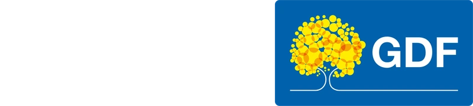
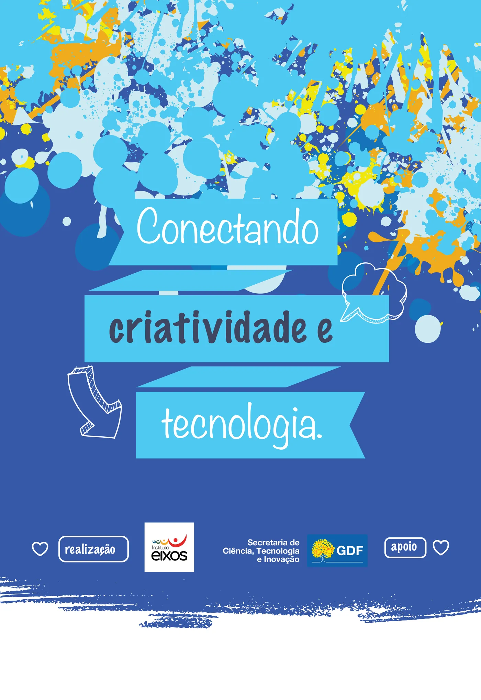
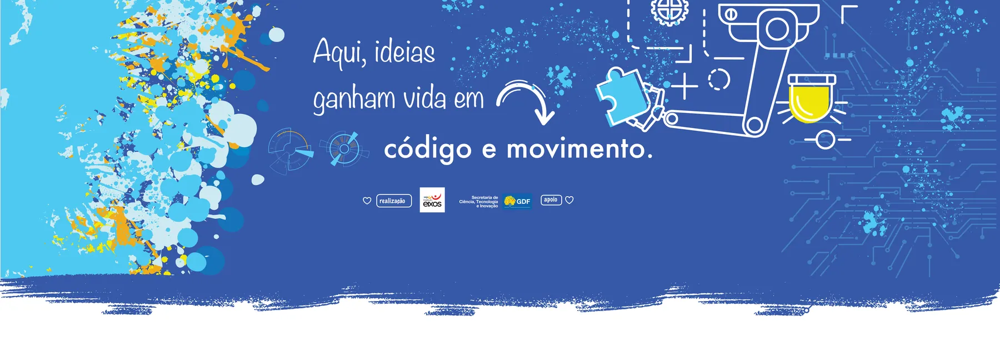
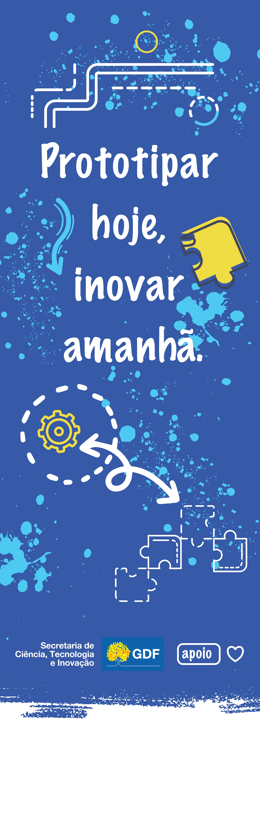
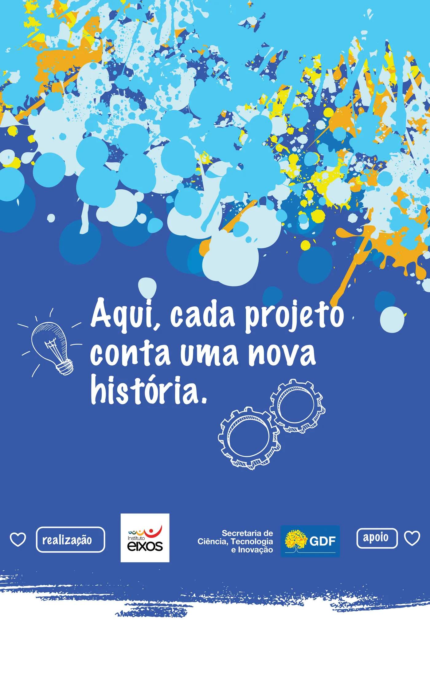
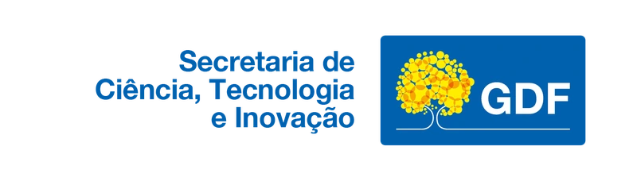

01
Despertar o futuro
Tudo começa com a curiosidade. Transformamos o interesse por tecnologia em aprendizado real, despertando jovens para o universo da inovação, programação e pensamento criativo.

O PaTec conecta escolas, startups, estudantes, professores e empresas para democratizar a robótica e impulsionar a inovação educacional em Brasília.
Em parceria com a Secretaria de Ciência, Tecnologia e Inovação de Brasília, com tecnologia educacional própria desenvolvida pela Roboowl.



O PaTec é um parque tecnológico voltado ao desenvolvimento de soluções em robótica, tecnologia e educação. Reunimos escolas, startups, estudantes, professores e empresas de tecnologia em um ecossistema pensado para formar, experimentar e gerar impacto real.
Promover o acesso à educação tecnológica por meio da robótica.
Ser referência nacional em robótica educacional.
Tudo começa com a curiosidade. Transformamos o interesse por tecnologia em aprendizado real, despertando jovens para o universo da inovação, programação e pensamento criativo.
Em parceria com a Secretaria de Ciência, Tecnologia e Inovação de Brasília, ampliamos horizontes criando pontes entre alunos, mercado e o futuro digital.
Resolução de problemas, trabalho em equipe, raciocínio lógico e autonomia. Cada projeto é um passo na formação de protagonistas do amanhã.
Com metodologia prática e inovadora, nossos alunos criam, testam e constroem soluções reais. Tecnologia deixa de ser teoria e vira ferramenta de transformação.
Inspiramos uma geração inteira a inovar, empreender e construir um futuro mais tecnológico, inclusivo e sustentável.



Sala maker, arenas de robótica, auditório, laboratórios de drones e uma fábrica digital com impressoras 3D Bambu Lab A1 Combo AMS e máquina de corte a laser.
Utilizamos soluções tecnológicas próprias desenvolvidas pela Roboowl, com foco em acessibilidade, usabilidade e inovação educacional. O Kit Arducation foi pensado para facilitar a adoção da robótica desde os primeiros passos.
Do kit ao primeiro projeto em minutos.
Blocos visuais com caminho para código.
Sem necessidade de internet em sala.
Conectividade quando quiser, integração total.
O PaTec já está presente em diferentes contextos de formação, criando pontes entre educação, mercado e inovação. Atuamos em parceria com escolas, instituições, empresas de tecnologia e programas de desenvolvimento para fortalecer o ecossistema educacional e tecnológico de Brasília.
Levamos educação tecnológica para dentro da rotina escolar com metodologia aplicável.
Desenvolvemos lógica, criatividade, autonomia, colaboração e resolução de problemas.
Conectamos escolas, startups, professores, estudantes e empresas de tecnologia.
Nosso compromisso é inspirar uma geração a inovar, empreender e transformar realidades.
Escolas encontram no PaTec uma estrutura completa para implantar robótica educacional com metodologia alinhada à BNCC, formação docente e suporte.
Alunos aprendem na prática, constroem projetos reais, participam de desafios e desenvolvem habilidades essenciais para o século 21.
Startups, professores e empresas de tecnologia encontram um ambiente favorável para validar soluções, conectar conhecimento e ampliar oportunidades.
Olimpíada Brasileira de Robótica — maior competição estudantil do país.
Mostra Nacional de Robótica — pesquisa, projeto e apresentação.
Competição Brasiliense de Robótica — talentos do DF em ação.
Segue-linha, sumô e batalha de robôs nas nossas arenas.

Respostas curtas e diretas para escolas, alunos, startups e patrocinadores. Não encontrou o que procurava? Fale com a gente.
Iniciamos com um diagnóstico gratuito e desenhamos um plano de implantação sob medida — kits Arducation, formação de professores, trilhas alinhadas à BNCC e suporte contínuo. Falamos com escolas públicas, privadas e redes.
Sim. O Arducation foi pensado para a realidade brasileira: funciona 100% offline, é robusto, plug-and-play e tem programação por blocos visuais com caminho para código real (C/C++ no ESP32).
Oferecemos espaço físico, mentoria, acesso à infraestrutura (sala maker, arenas, drones, laboratórios) e conexão direta com escolas, professores e gestores públicos — um ambiente real de validação para edtechs e hardtechs.
OBR, MNR, Competição Brasiliense de Robótica e desafios internos do PaTec (sumô, segue-linha, batalha). Preparação técnica, mentoria e logística por nossa equipe.
Trabalhamos com cotas de patrocínio que viabilizam a chegada do PaTec em mais escolas e comunidades. Entre em contato pelo formulário e enviamos um material institucional completo.
Entre em contato para implantar robótica educacional, conhecer o espaço, apoiar o projeto ou solicitar o material institucional.
O contato do projeto acontece por e-mail, Instagram e visitas agendadas no espaço do PaTec, em Brasília.
Quer receber a apresentação institucional do PaTec?
Solicitar apresentação institucional